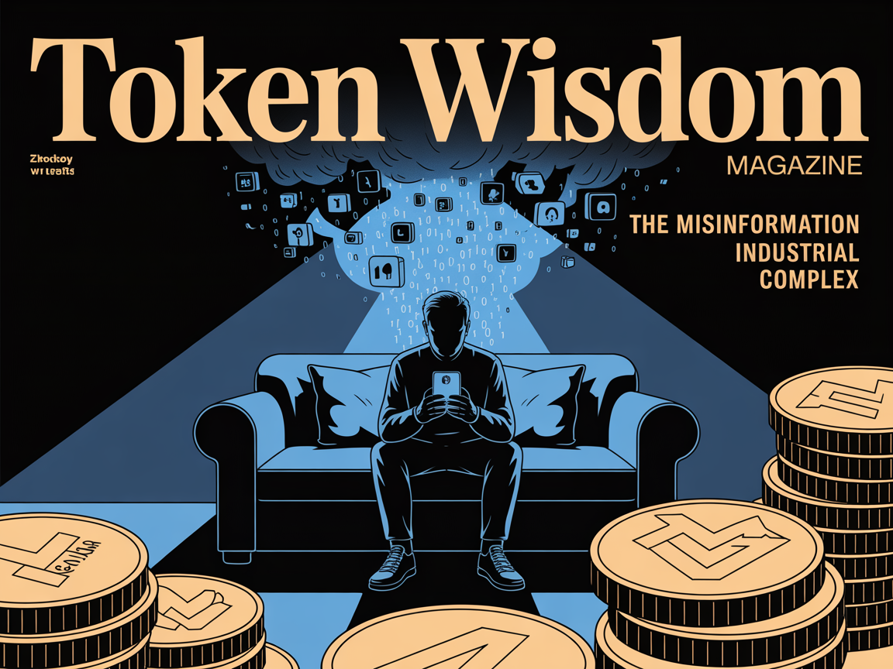

The Misinformation Industrial Complex
Your social feed: a battleground where AI content farms profit from economic anxiety. Welcome to the Misinformation Industrial Complex. Fake corporate exodus stories exploit real fears. That viral video isn't just clickbait—it's information warfare fueled by your midnight scrolling.


According to Donny Miller,
"In the age of information, ignorance is a choice."

I need to be honest about why I wrote this.
A while back, I almost shared one of these videos myself. Late night, taking a break and scrolling YouTube when a Billy Eilish video hit my timeline. Billy showed up at the Met Gala in a very bizarre oversized suit. My finger hovered over the share button for thirty seconds.
Then I recognized I was being manipulated in real-time. My economic anxiety was being harvested for someone else's profit. She wasn't even there! She had a show somewhere else that night!
That moment became an obsession.
You deserve to know the rules of this game.
If you see something—say something.
How AI-Powered Content Farms Are Hijacking Economic Discourse
An investigation into the systematic manufacturing of economic crisis narratives—and why your social media feed has become a psychological battlefield
🌶️ Courtesy of your friendly neighborhood, Khayyam

The video hit Sarah's feed super late on a Tuesday night in June. She'd been scrolling mindlessly after another rough day. Layoffs at her company, bills piling up, the usual economic anxiety that keeps millions of Americans awake at night. The video looked legitimate: professional narration, specific dollar amounts, company names she recognized. "Six of America's biggest corporations are quietly pulling out of the US," the narrator declared with practiced urgency. "They're leaving because it makes sense."
Her stomach dropped. Without thinking, she shared it.
Sarah isn't alone. Millions of Americans consumed that same video, experience that same gut punch of economic dread, and hit "share" before fact-checking. But here's the thing: it's complete fiction. And Sarah? She doesn't exist. I created her to show you exactly how this game is played.
I've spent the weekend conducting forensic analysis of viral content claiming major American corporations are fleeing to Canada en masse. What I discovered isn't just misinformation, it's the emergence of a sophisticated "Misinformation Industrial Complex" that's systematically hijacking economic discourse through AI-powered content generation, algorithmic manipulation, and weaponized anxiety.
And people like fictional Sarah—people exactly like you—are the targets.
This isn't just a problem. It's an industry. #micdrop!
The Anatomy of Manufactured Crisis
The specific claims are laughably false. Coca-Cola isn't establishing "packaging plants in Ontario", the company just reported record revenues of $47.1 billion with headquarters firmly planted in Atlanta.[1] Ford isn't abandoning America for a "$3 billion investment in Oakville"—they're expanding existing operations while maintaining their Dearborn base.[2] Tesla, Campbell Soup, General Motors, Alcoa—none are fleeing anywhere.[3]
The specific claims are laughably false. Coca-Cola isn't establishing "packaging plants in Ontario", the company just reported record revenues of $47.1 billion with headquarters firmly planted in Atlanta.[1:1] Ford isn't abandoning America for a "$3 billion investment in Oakville"—they're expanding existing operations while maintaining their Dearborn base.[2:1] Tesla, Campbell Soup, General Motors, Alcoa—none are fleeing anywhere.[3:1]
Yet millions are watching these fabricated narratives, sharing them, believing them. That video Sarah shared? It's racked up about 90k views in a couple of days. The comments are filled with people making real decisions based on fake information, changing retirement plans, avoiding investments, even relocating families.
Why does this work so well? Because we're witnessing the weaponization of economic anxiety through industrial-scale content manipulation. And it's designed to exploit exactly the kind of fear Sarah was feeling that Tuesday night.
SEC Form 10-K Annual Report, The Coca-Cola Company, 2024 ↩︎ ↩︎
Ford Motor Company, "Ford to invest $3 billion in Super Duty production expansion, creating jobs in Canada and the U.S.," FleetOwner, 2024. ↩︎ ↩︎
Tesla, Inc., SEC Form 10-K Annual Report, December 31, 2024; Campbell Soup Company, SEC Form 10-K Annual Report, September 2024. ↩︎ ↩︎
The AI Content Factory

Behind these videos lies a revelation that should terrify anyone who values truth: AI-generated news websites now produce thousands—sometimes tens of thousands—of articles daily, monetized through programmatic advertising that generates 2-4 cents per 1,000 views.[1] These aren't rogue operations run by basement hackers, they're business models, as methodical as any Fortune 500 company.
Think about that for a moment: someone made money off Sarah's anxiety. Her fear was literally converted into profit at roughly 4 cents per thousand views.
NewsGuard's tracking has identified over 1,200 "unreliable AI-generated news" websites globally—and that number is growing weekly. These aren't isolated operations. They function as sophisticated hub-and-spoke distribution networks, amplifying false narratives across platforms with military-grade precision.[2] Content farms use authentic news clips mixed with fabricated narration to create false corporate stories that feel legitimate enough to bypass critical thinking.[3]
The economics are perverse but profitable: manufacture crisis, trigger anxiety-driven sharing, monetize through ad revenue. Rinse, repeat, scale.
Platform Algorithms: The Perfect Weapon

Here's the uncomfortable truth that should make you angry: social media platforms are engineered from their foundation to amplify exactly this type of content. Their algorithms prioritize what researchers call "PRIME content"—Prestigious, In-group reinforcing, Moral, and Emotional. [1] Crisis narratives check every box.
When Sarah saw that video, the algorithm had already determined she was the perfect target. Late-night scrolling, previous engagement with economic news, demographic markers suggesting financial concern, all fed into a system designed to show her exactly what would make her most likely to share.
The data is stark: false economic information spreads 6-10 times faster than accurate news.[2] Approximately 8-10% of algorithmic recommendations across major platforms are categorized as problematic content.[3] This isn't a bug, it's a feature of engagement-driven optimization that values viral potential over accuracy.
When platforms do intervene, it's typically after maximum viral spread has already occurred.[4] Content removal becomes damage control, not prevention.
Knight First Amendment Institute, "Understanding Social Media Recommendation Algorithms," Columbia University ↩︎
Scientific American, "Social Media Algorithms Warp How People Learn from Each Other," 2024 ↩︎
"8–10% of algorithmic recommendations are 'bad', but… an exploratory risk-utility meta-analysis and its regulatory implications," ScienceDirect, 2023 ↩︎
Centre for Economic Policy Research, "Evaluating anti-misinformation policies on social media," CEPR* ↩︎
The Psychology of Economic Manipulation

The creators of these narratives understand cognitive psychology better than most PhD programs teach it. They know that economic uncertainty increases susceptibility to misinformation by up to 40%, making audiences particularly vulnerable during periods of trade tension.[1]
But let's talk about what that 40% actually means in human terms. It means Sarah, already worried about layoffs, becomes significantly more likely to believe and share false information. It means the single mom checking her phone before bed becomes a distribution node for lies. It means your neighbors, your family members, people you care about, become unwitting participants in their own manipulation.
The "quiet exodus" framing exploits specific psychological vulnerabilities: insider knowledge appeals that suggest hidden truth, temporal ambiguity that makes verification difficult, and situation model construction that provides coherent cause-and-effect narratives even when factually incorrect.[2]
Most insidiously, these false narratives create 'continued influence effects,' where the information maintains impact even after correction, particularly when tied to existing economic anxieties.[3]
"Coronavirus Perceptions and Economic Anxiety," The Review of Economics and Statistics, MIT Press, Vol. 103, No. 5 ↩︎
"The narrative truth about scientific misinformation," Proceedings of the National Academy of Sciences, 2020 ↩︎
"The psychological drivers of misinformation belief and its resistance to correction," Nature Reviews Psychology, 2022 ↩︎
Information Warfare Disguised as News

This isn't just about market manipulation—it's information warfare with geopolitical implications. And your mind is the battlefield. Economic misinformation serves as a force multiplier for broader influence operations, creating cognitive vulnerabilities that make populations more susceptible to additional false narratives.[1]
When Sarah shared that video, she wasn't just spreading misinformation—she was becoming an unwitting soldier in an attack on American economic confidence. The people who created that content understand that a population that doesn't trust its own economic institutions is easier to manipulate in other ways.
The timing coordination with election cycles, policy debates, and international negotiations reveals strategic intent beyond mere profit.[2] When foreign actors or commercial interests can manufacture economic anxiety at scale, they gain unprecedented leverage over domestic political processes.
Consider the broader implications: if audiences can't distinguish authentic corporate news from AI-generated fiction, how can democracies make informed economic decisions? When viral lies outpace institutional corrections, who controls the narrative foundation of economic policy?
The Real Economic Data
Meanwhile, actual economic data reveals the opposite of exodus: Canadian direct investment in the US reached $1.29 trillion in 2024, up $172 billion from 2023.[1] Daily trade volume between the countries reaches $3.6 billion, with deep supply chain integration where automotive parts cross borders 7-8 times before final assembly.[2]
Recent tariff disruptions have created legitimate business adjustments—56.8% of Canadian exporters have taken mitigation actions—but this represents supply chain diversification, not wholesale corporate flight.[3] The US actually maintains a manufacturing trade surplus with Canada when energy is excluded.[4]
The fabricated crisis narratives exploit real policy tensions while inventing non-existent consequences, creating maximum anxiety with minimum factual foundation. They take Sarah's legitimate concerns about the economy and twist them into profit-generating fear.
Statistics Canada, "The Daily — Foreign direct investment, 2024," April 2025 ↩︎
TD Economics, "Setting the Record Straight on Canada-U.S. Trade," 2025; Supply Chain Brain, "Integration of U.S.-Canada Supply Chains Model for Globalized Trade." 2025 ↩︎
Statistics Canada, "Impact of tariffs on businesses in Canada: Expectations and strategic responses, second quarter 2025 ↩︎
Scotiabank, "Canada-US Trade: Getting Up To Speed," January 2025 ↩︎
The Path Forward: Systematic Reform

Traditional fact-checking is failing because it operates at human speed while misinformation spreads at algorithmic velocity. By the time fact-checkers debunk the corporate exodus video, it's already been shared 12.3 million times. We need systematic solutions that match the scale and sophistication of the threat.
But we also need individual solutions. Right now. For people like Sarah. For people like you.
Platform accountability: We need algorithmic transparency requirements that force platforms to reveal how content is ranked and recommended. We need alternative optimization metrics that value truth over engagement. And we need enhanced detection systems specifically designed to identify coordinated economic misinformation campaigns.[1]
Educational immunity: Inoculation theory suggests pre-emptive exposure to weakened misinformation arguments builds resistance.[2] We need economic literacy education alongside media literacy, teaching lateral reading techniques and temporal verification methods.
Institutional response: Proactive narrative monitoring, rapid response capabilities, transparent communication about economic data and methodology.[3] When institutions wait for misinformation to go viral before responding, they've already lost the information war.
Regulatory frameworks: The Misinformation Industrial Complex operates in regulatory gaps between platforms, jurisdictions, and traditional media oversight.[4] We need new approaches that address systematic manipulation while preserving legitimate discourse.
Personal defense: Before you share that next crisis video, ask yourself: Who benefits from my fear? Take thirty seconds to check if the claims are searchable on legitimate news sites. Remember that your anxiety is valuable to someone, and they're farming it for profit.
Brookings Institution, "Transparency is essential for effective social media regulation," 2024 ↩︎
Carnegie Endowment for International Peace, "Countering Disinformation Effectively: An Evidence-Based Policy Guide," January 2024 ↩︎
"A process view of crisis misinformation: How public relations professionals detect, manage, and evaluate crisis misinformation," ScienceDirect, 2021 ↩︎
U.S. Naval Institute, "The Urgent Need for Protection Against Information Warfare," Proceedings, May 2024, Vol. 150 ↩︎
The Steaks Are High

We're at an inflection point. The technology for manufacturing convincing economic misinformation exists, the distribution infrastructure is operational, and the monetization models are proven. Sarah's story is happening millions of times daily across America. The only question is whether democratic societies will develop effective defenses before their information environments are completely compromised.
This isn't about left versus right, or even true versus false. It's about whether citizens will retain agency in democratic decision-making or become targets in systematic manipulation campaigns designed to exploit their economic anxieties for political and commercial gain.
The next time you see viral content about corporate departures, supply chain crises, or economic catastrophe, think about Sarah. Think about that moment at 10:47 PM when someone's genuine economic anxiety was converted into profit and propaganda. Ask yourself: Who benefits from your fear?
The answer might be more disturbing than the crisis they're selling.
But at least now you know the question to ask.
Don't miss the weekly roundup of articles and videos from the week in the form of these Pearls of Wisdom. Click to listen in and learn about tomorrow, today.


Sign up now to read the post and get access to the full library of posts for subscribers only.
 🌶️ iamkhayyam
🌶️ iamkhayyam
Khayyam is a systems theorist and technology strategist whose research focuses on the intersection of artificial intelligence, information systems, and social dynamics. His expertise in innovation diffusion and technological transformation informs his analysis of how emerging technologies reshape human communication and decision-making processes.